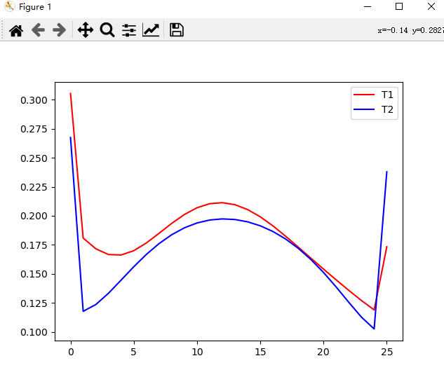
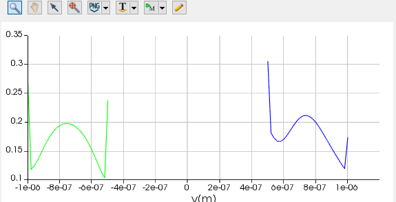
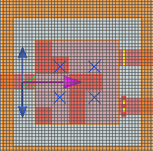

例程:简单的例子
我们先来看一个简单的仿真例子，这个例子中我们定义了一个简单的器件，并放置了光源，定义了仿真区域、边界条件、输入模式等等，并在最后将仿真的结果通过监视器输出，以numpy格式导入到了python中，并最后通过matplotlib可视化。
注意：本示例中引用了bidict、matplotlib等软件包，若没有安装，请参考附录中的软件包安装
import lumapi
import numpy as np
from collections import OrderedDict
from bidict import bidict
import matplotlib.pyplot as plt
def init_base(mode,size=(2,2)):
mode.switchtolayout()
# 基底生成
# mode.importmaterialdb("fdtd_files/material.mdf") #加载材料数据
mode.addrect(x=0, y=0.0, z=-1.11e-6,x_span=2e-5,y_span=1e-5,z_span=2e-6,name="box",material="SiO2 (Glass) - Palik")
mode.addrect(x=0, y=0.0, z=0,x_span=2.6e-6,y_span=2.6e-6,z_span=0.22e-6,name="Si (Silicon) - Palik",material="Si (Silicon) - Palik")
mode.addrect(x=-5.15e-6, y=0.0, z=0, x_span=7.7e-6, y_span=0.5e-6, z_span=0.22e-6, name="in",
material="Si (Silicon) - Palik")
mode.addrect(x=5.15e-6, y=0.75e-6, z=0, x_span=7.7e-6, y_span=0.5e-6, z_span=0.22e-6, name="out1",
material="Si (Silicon) - Palik")
mode.addrect(x=5.15e-6, y=-0.75e-6, z=0, x_span=7.7e-6, y_span=0.5e-6, z_span=0.22e-6, name="out2",
material="Si (Silicon) - Palik")
mode.addmesh(x=0, y=0, z=0, x_span=2.6e-6, y_span=2.6e-6, z_span=0.22e-6, name="mesh",
dx=0.02e-6,dy=0.02e-6,dz=0.02e-6,)
mode.addvarfdtd(x=0, y=0, z=0,x_span=4e-6, y_span=4e-6, z_span=0.8e-6,simulation_time=1000e-15,x0=-1.48565e-6)
#通过OrderedDict顺序设置模型参数
source_props = OrderedDict([("name", "source"), ("injection axis", "x"),
("x", -1.7e-6), ("y", 0),("y span", 2e-6),
("selected mode number",2),
("center wavelength",1.55e-6),("wavelength span",0.2e-6),
("optimize for short pulse", 1)
])
mode.addmodesource(properties=source_props)
# OrderedDict也可以这样给
mode.addpower(properties=OrderedDict([("name", "T1"), ("monitor type", "2D X-normal"),
("x", 1.45e-6), ("y", 0.75e-6),("z",0),
("y span", 0.5e-6),("z span",0.4e-6),
("override global monitor settings", True),("frequency points",1)]))
mode.addpower(properties=OrderedDict([("name", "T2"), ("monitor type", "2D X-normal"),
("x", 1.45e-6), ("y", -0.75e-6),("z",0),
("y span", 0.5e-6),("z span",0.4e-6),
("override global monitor settings", True),("frequency points",1)]))
# pattern生成
rows, columns = size[0], size[1]
mode.addstructuregroup(name="666")
x_span = 2.6e-6 / columns
y_span = 2.6e-6 / rows
for row in range(rows):
for column in range(columns):
#模型在放置之后，默认选择的就是这个模型，就像下面这里，放置矩形之后可以直接将其加入到模型组之中，不用重新选择
mode.addrect(x=-1.3e-6 + x_span / 2 + column * x_span, x_span=x_span,
y=1.3e-6 - y_span / 2 - row * y_span, y_span=y_span,
z=0, z_span=0.22e-6, name=str(row) + "r" + str(column) + "c",
material="etch")
mode.addtogroup("666")
def change_pattern(mode,pattern_matrix):
mode.switchtolayout()
pattern_dic=bidict({
"Si (Silicon) - Palik":1,
"etch":0
})
for row in range(pattern_matrix.shape[0]):
for column in range(pattern_matrix.shape[1]):
mode.select("666::"+str(row)+"r"+str(column)+"c")
pix = mode.getObjectBySelection()
material_name=pix.material
if pattern_dic[material_name]!=pattern_matrix[row][column]:
pix.material=pattern_dic.inverse[pattern_matrix[row][column]]
def get_result(mode):
t1 = mode.getresult("T1", "E")["E"].squeeze()
t2 = mode.getresult("T2", "E")["E"].squeeze()
#这里a,b是两个监视器的电场幅值，即xyz方向的平方相加开根
a = np.sqrt(np.sum(np.power(np.abs(t1), 2), axis=1))
b = np.sqrt(np.sum(np.power(np.abs(t2), 2), axis=1))
return a,b
if __name__ == '__main__':
row_num = 5
column_num = 5
mode = lumapi.MODE()
init_base(mode, size=(row_num, column_num))
#保存为项目文件
mode.save("fdtd_files/base"+str(row_num)+"_"+str(column_num)+".lms")
# 初始化pattern
best_pattern_matrix = np.random.randint(0, 2, (row_num, column_num))
change_pattern(mode,best_pattern_matrix)
mode.run()
a,b=get_result(mode)
#绘图，可以和软件中自带的可视化比较一下
fig, ax = plt.subplots(1)
ax.plot(np.arange(len(a)),a,c='r',label='T1')
ax.plot(np.arange(len(b)), b, c='b', label='T2')
plt.legend()
plt.show()
以上程序运行结束之后会画出两个输出端口的电场幅值分布：

对应mode中的监视器可视化：

器件结构：

能够看到数据正确。